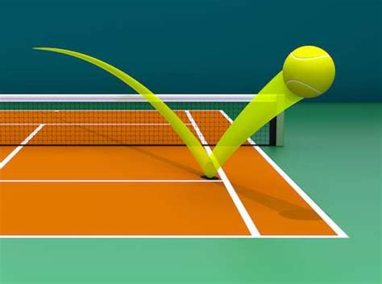
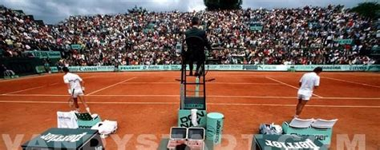

Les règles du Tennis
Sur cette page vous pourrez retrouver les règles principales du Tennis
accueil •
L'histoire du Tennis •
Le terrain et le matériels de Tennis •
Les différents tournois au Tennis •
Le classement des joueurs de Tennis •
cv anglais •
cv francais •
Quelques joueurs célébres
• Dans une rencontre de simple comme de double, chaque joueur sert à tour de rôle pendant la durée d'une partie. Le joueur qui sert doit impérativement être placé derrière la ligne de fond de court au moment où il frappe son service. Le serveur possède en outre deux services : s'il manque le premier, souvent frappé avec un certain risque, il bénéficie d'une seconde balle de service, en général frappée avec davantage de précautions. Le receveur, en revanche peut se placer où il le souhaite sur le court pour retourner le service. La plupart du temps, il est nécessaire de remporter deux manches afin de gagner la partie. Les deux exceptions sont d'une part les matchs du tableau masculin des tournois du Grand Chelem et d'autre part ceux de la Coupe Davis, qui se jouent en trois manches gagnantes. Pour gagner une manche, il faut être le premier à marquer six jeux avec au moins deux jeux d'écart, dans le cas contraire la manche se poursuit. Les scores possibles pour remporter une manche sont ainsi : 6/0, 6/1, 6/2, 6/3, 6/4 et 7/5 (si les deux joueurs n'ont pu se départager au bout de dix jeux). Si les deux joueurs n'ont pas été en mesure de se départager au cours des douze premiers jeux (donc à égalité à 6/6), ils disputent un jeu décisif (« tie-break » en anglais, « bris d'égalité » au Canada francophone) qui consiste à jouer des points, le premier qui a 7 points a gagné le jeu décisif, qui vaut un jeu, et remporte la manche 7/6. En revanche, dans les tournois du grand chelem, exception faite de l'US Open, chez les hommes comme chez les femmes, il n'y a pas de jeu décisif dans la manche décisive (la cinquième chez les hommes, la troisième chez les femmes), et le match n'est remporté que lorsque l'on parvient à avoir deux jeux d'avance sur l'adversaire; par exemple 8/6, 9/7, 10/8, etc. L'invention du « jeu décisif » date de 1970, soit deux ans après le début de l'ère open. La finalité de ce jeu était d'empêcher des matchs interminables, car il arrivait à l'époque que des manches soient gagnées sur le score de 29/27 par exemple. Le principe du jeu décisif est assez simple. Les joueurs servent à tour de rôle. Celui qui débute ne sert qu'une fois de droite à gauche, puis son adversaire sert deux fois de suite, de gauche à droite, puis de droite à gauche, et ainsi de suite. Le gagnant de la manche est le premier joueur à atteindre sept points avec au moins deux points d'écart (ex. : 7/2, 7/5, 9/7…) La manche est alors gagnée sur le score de 7-6. Chez les joueurs les plus jeunes, les règles de jeu sont assouplies. En effet, jusqu'à l'âge de onze ans, en France, une manche est gagnée lorsqu'un joueur atteint 5 jeux avec deux jeux d'avance sur son adversaire. En cas d'égalité à 4 jeux partout, les joueurs se départagent également avec un « jeu décisif ». Un autre format permet de faire des manches de 4 jeux avec jeu décisif à 3 partout. Dans le jeu en double, le match se déroule au meilleur des trois manches, il faut donc remporter les deux manches pour remporter le match. Si les deux équipes remportent chacune une manche, par exemple : 6-3 3-6 ; on procède à un « super tie break » de dix points pour départager les deux équipes opposées : elle est considérée comme manche décisive. Le « super tie break » se déroule de la même façon que le « jeu décisif », il faut donc remporter dix points avec au moins deux points d’écart (ex. : 10/5, 10/7, 11/9…). Une manche se remporte donc en marquant un certain nombre de jeux. Comme mentionné ci-dessus, chaque joueur sert à tour de rôle, pendant la durée d'un jeu. Afin de remporter un jeu, il est nécessaire de marquer au moins quatre points, soit sur son service lorsque l'on sert, soit sur le service adverse lorsque l'on reçoit. Il est donc possible, soit pour le serveur, soit pour le receveur de remporter un jeu, même si théoriquement, le serveur est avantagé par rapport au receveur. Si les deux adversaires marquent trois points, on a une situation d'égalité, expliquée ci-après. Lors d'un jeu, voici la manière dont les points sont décomptés : zéro (« love » en anglais11) : pour aucun point marqué dans le jeu ; quinze12 : pour un point marqué ; trente : pour deux points marqués ; quarante : pour trois points marqués. Lorsque les deux joueurs ont marqué trois points, (donc à 40/40), il y a égalité. Celui qui marque le point suivant obtient un « avantage ». Pour remporter le jeu, un joueur qui a l'avantage doit marquer un autre point. Si c'est le joueur qui n'a pas l'avantage qui marque le point suivant, on revient à égalité, et ainsi de suite jusqu'à ce que l'un des deux joueurs remporte le jeu. Chez les jeunes enfants âgés au plus de 11 ans, la règle de l'avantage n'existe pas. C'est la règle du « No-ad » (« No advantage ») qui s'exerce. Le joueur qui reçoit choisit sa zone de retour de service pour le point décisif (toujours à 40-40). Cette variante est aussi parfois appliquée en double13. Concernant l'arbitrage, on donne toujours le score du serveur en premier. Par exemple, si le serveur marque trois points contre deux à son adversaire, le score est 40/30. Dans le cas contraire, le score est 30/40. Il en est de même au niveau des « avantages », lorsqu'il y a égalité dans un jeu. Lorsque c'est le serveur qui a l'avantage, l'arbitre annoncera « avantage » puis le nom du joueur ou de la joueuse. En double, l'arbitre annoncera le nom du serveur ou du relanceur. Toutefois, en cas de Championnat par équipe ou d'équipes nationales (Coupe Davis ou Fed Cup, par exemple), le nom du club ou du pays est alors donné.

Les fautes
On distingue plusieurs types de fautes au tennis. Une balle sera par exemple annoncée faute (ou « out » en anglais) lorsqu'elle ne retombe pas dans les limites du terrain (les lignes étant situées à l'intérieur du terrain). Le point est alors accordé à l'adversaire. Lorsque la balle tombe dans le filet, du côté du joueur qui a frappé la balle, le point est également accordé à l'adversaire, mais il n'est pas nécessaire d'annoncer faute. L'arbitre ne doit d'ailleurs pas signaler une balle qui tombe dans le filet comme « faute ». Le service doit être frappé en diagonale de telle sorte que la balle tombe dans le carré de service. Si la balle ne tombe pas dans le carré de service lors de la mise en jeu, l'arbitre annonce « faute », et le serveur doit, soit servir une seconde balle si la faute survient sur le premier service, soit accorder le point à l'adversaire si la faute survient sur la seconde balle de service. Lorsque les deux services sont fautes (ils ne tombent pas dans les carrés de service, ou tombent dans le filet), on parle de « double faute ». Le point est alors accordé au receveur. Lorsqu'au service, la balle touche la bande du filet et retombe dans le carré de service où le joueur était censé servir, l'arbitre annonce « let » ou « filet », la balle n'est pas faute, et le joueur peut rejouer le service. En revanche, si la balle du serveur touche la bande du filet et tombe en dehors du carré de service, la balle est annoncée faute, et le joueur doit soit passer à sa seconde balle, soit accorder le point à l'adversaire selon qu'il a frappé une première ou une seconde balle. Une faute plus complexe concerne le serveur. En effet, pour effectuer un service valable, il est nécessaire que la balle soit frappée avant que le joueur ne franchisse la ligne de fond de court. Ainsi, lorsque le joueur frappe son service, et a déjà une partie de son corps qui touche le sol à l'intérieur du court ou bien lorsque le serveur "mord" la ligne de fond de court au moment de son lancer de balle, le service est refusé. Le joueur doit alors soit frapper une seconde balle de service (si sa faute a été commise sur la première balle), soit accorder le point à l'adversaire si cette faute survient sur la deuxième balle. Cette faute, assez rarement signalée car difficile à juger, est nommée « faute de pied ». La « faute de pied » est également valable sur un plan latéral : le serveur doit se trouver du bon côté du terrain de telle sorte à servir dans une diagonale. Si le serveur sert à droite, il doit se tenir dans la partie gauche du terrain (et inversement) sans être dans le prolongement du couloir.

